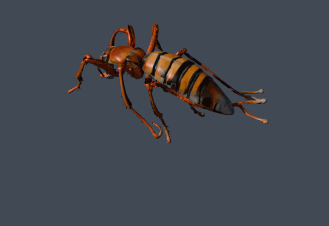
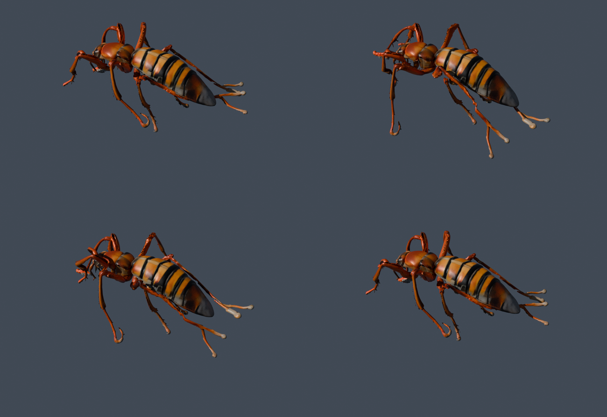

Le maillage d'origine (374 601 sommets, texture 4096×4096) sur le squelette-gabarit araignée, jouant le clip « Walk » — rendu par un vrai moteur, textures interpolées correctement. Le nuage de points précédent approximait les couleurs au sommet le plus proche, d'où les taches bleues parasites : ceci est l'apparence réelle.

meshes/ant_gabarit_araignee_walk_*.glb — ouvrable dans FabMesh.